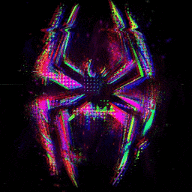

Givin Up (Not the One)
Metro Boomin, Don Toliver, 21 Savage, 2 Chainz

Original Video
[Intro: Oscar Isaac]
But I'm not like the others
I don't always like what I have to do (Honorable C.N.O.T.E.)
But I know I have to be the one to do it
I've given up too much to stop now
[Chorus: Don Toliver]
I can't be the one here givin' up
I'm not the one here givin' up (No)
Time heals all, but I can't feel what it was
If you were me, you wouldn't give up
I'm not the one here givin' up (I'm not the one here givin' up)
I'm not the one here givin' up (I'm not the one herе givin' up)
I'm not the one herе givin' up (I'm not the one here givin' up)
I'm not the one here givin' up (I'm not the one here givin' up)
[Verse 1: 21 Savage]
Woah, woah
Every obstacle I overcame
Pushed through it, and I ain't pointin' blame
Kept my focus
Every time they tried to hold me back I broke up out they chains
Reached the top and still remained the same
Hit the bottom, get up, no complaint
Walk on the stage and they yell my name
They doubt me, but I always do my thing
'Cause they count on me (21)
I got a family to feed (21)
Duckin' the envy and greed (On God)
Street smart, but I still read (On God)
Give birth to heroes, I breed (21)
I smell a win and get tea (21)
Let down the top, feel the breeze (Straight up)
How you gon' give up on me? (On God)
How you just give up on we? (21)
I'd never quit, though
Got a house now, I started with a brick, though (Facts)
Say you hungry, all you wanna do is sit, though (Facts)
I'm a leader, I'll show you how to fish, though (21)
If you want it, there's some things you gon' miss, though (21)
I got goals everybody ain't built for (21)
I ain't stoppin' 'til I get what I'm here for (On God)
[Chorus: Don Toliver]
I can't be the one here givin' up
I'm not the one here givin' up (No)
Time heals all, but I can't feel what it was
If you were me, you wouldn't give up
I'm not the one here givin' up (I'm not the one here givin' up)
I'm not the one here givin' up (I'm not the one here givin' up)
I'm not the one here givin' up (I'm not the one here givin' up)
I'm not the one here givin' up (I'm not the one here givin' up)
[Verse 2: 2 Chainz]
Yeah, 2 Chainz
Love me or love me not, link at the gamma spot
Up front, we work, that was a hand-me-down
I wasn't stunned, I'll make 'em stand around
I got a stick with a bandana 'round (Ah)
Never gave up on me, I own your favorite OG
Make your baby OD when she on me
Told him, "In my time," just so you know I ain't lyin'
I bought my whole clique, some new Rollies
Alone, never lonely
Rock with the real, never phony
Do 24 like I'm Kobe
My superhero, we goated
It was the street that had motive
I got a car and new wheel (Wheel)
I got new thoughts on the head
'Member the flow with the beard
You know I heard what you said
Now when I'm droppin' the top
Don't let that go over your head
[Chorus: Don Toliver & 2 Chainz]
I can't be the one here givin' up (Yeah, Toni)
I'm not the one here givin' up (No)
Time heals all, but I can't feel what it was
If you were me, you wouldn't give up (Mmm)
I'm not the one here givin' up (I'm not the one here givin' up)
I'm not the one here givin' up (I'm not the one here givin' up)
I'm not the one here givin' up (True, I'm not the one here givin' up)
I'm not the one here givin' up (I'm not the one here givin' up, tell 'em)
[Outro: Don Toliver & Jake Johnson]
Fair enough
Is part of your life (Is part of your life)
I see you runnin' out of time
Is part of your life (Is part of your life)
Being Spider-Man is a sacrifice
That's the job, that's what you signed up for